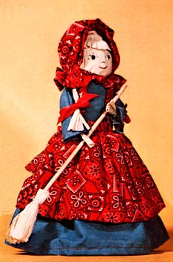
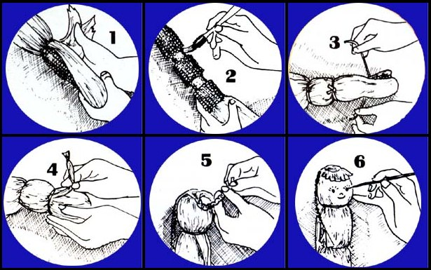

In MOTHER NO. 35 (see "Cornhusk Dolls for Fun and Profit", pages 38 - 43), Nancy Bubel told us how to make and market two kinds of dolls - traditional and contemporary - from nothing but the paper - like shucks taken from ears of corn. And they're dandy little dolls too. "But wait a minute," says Charlene Berryman. "Down here in Texas, where I live, my family makes another kind of doll ... from the whole ear of corn. And here's how we do it."
To make our country dolls you'll need - first of all - some well-formed and filled out ears of corn complete with shucks. The best time to gather them from the field usually runs from late August, through September and October, and into early November. After that, the husks (on any corn that still hasn't been picked) sometimes starts to get a little ragged looking. If your ears have any evidence of weevils, wrap them in plastic and store them in a freezer for two or three days.
In the meantime, you can round up the other materials and tools you'll need: a paring knife, an old towel, scissors, soft lead pencil, heavy twine, white thread, clear varnish, tempera or acrylic paints, a small jar, large paper cup, old toothbrush, and a pan (large enough to soak an ear of corn in).
When you're ready to begin the construction of a doll, start by soaking an ear of corn in warm water for ten minutes. Then - once they've softened - gently pull its shucks back (one at a time), and thoroughly clean them. Tear off and discard any of the outer husks that are tattered or discolored and scrub the kernels underneath with the old toothbrush. The ear can then be laid aside (six hours outside or 24 hours indoors) until it has completely dried.
Remove a band of kernels (approximately one inch wide) from both the "neck" and "waist" of the ear of corn. (Use the paring knife, if you have to, to pick the grains away from the cob ... but be careful!) Then spray or brush clear varnish over the remaining kernels to preserve them and protect them from insects. Do not paint the shucks. When you've finished, hang the ear up by its husks and let it dry. (If possible, all of Step Two is best done outside or in a workshop.)
Soak the shucks (and shucks only) of your ear of corn in water until they become soft and pliable. Then spread an old towel on a work surface and - keeping everything over it - cut two pieces of twine (each approximately nine inches long) and six lengths (again, nine inches each) of thread.
While holding the ear of corn in one hand, use the other to pull its shucks down - one at a time - until the kernels of corn are covered all the way around. Don't pull all the sections of husk down. Leave some loose for the braids and bangs you 'll make later.
Tie one piece of twine around the pulled-down shucks at your ear's "neck". Then, leaving enough shucks on each side of the developing doll to tie into "arms", smooth the rest of the pulled-down husks past the doll's "waist" . . . and tie them there with the second piece of twine.
Tie the finished arms off at the elbows and wrists so that they're each about four inches long (this will take a total of four lengths of thread).
Temporarily stand your doll in a small jar and - using the smoothest side of the shuck - covered ear for the face - start to form the toy's bangs and braids. A single section of shuck is usually just right for the bangs ... but you can always split one if it's too wide, or combine two narrow ones.
Pull another layer of the husk around to the back of the doll's head for braids. Then gently tear off the remaining shucks and lay them aside (you may want to use them later for a broom). Split the shucks that you intend to braid into 12 (six for each side) one-half-inch strips. Then combine the 12 strips into six doubles and - using three of the doubled strips for each one - braid the two pigtails and tie them off with your two remaining lengths of thread.
Turn the doll around at this point, trim its bangs (just above where the eyes will be painted on the face) with scissors and then fringe the bangs by cutting them vertically at intervals of one-quarter inch. Finally, set the doll outside about three hours or out of the way indoors for 12 hours to allow the husk pigtails, face, etc., to completely dry.
A simple mouth, nose, eyes, and lashes can be painted on the dried doll with. either tempera or acrylics. Once the paint has set, invert a large paper cup, cut an "X" across its bottom, and push the doll down into the upside-down container to within about one inch of "her" waist. The finished toy or display should stand approximately 10 inches tall.
EDITOR'S NOTE. Once you've constructed Charlene's basic doll, you can let your imagination run wild. Dress her up as a little girl ... as a granny. . . even as a "doll". If you have trouble getting started just send $2.00 to Charlene Berryman, The Barnyard, Rt. 1, Box 41C Kingsbury, Texas 78538 ... and she'll send you three big sheets of dollmaking instructions and patterns for skirts, petticoats, aprons, dresses, and bonnets ... just like the ones you see here.
|
 |
 |
|